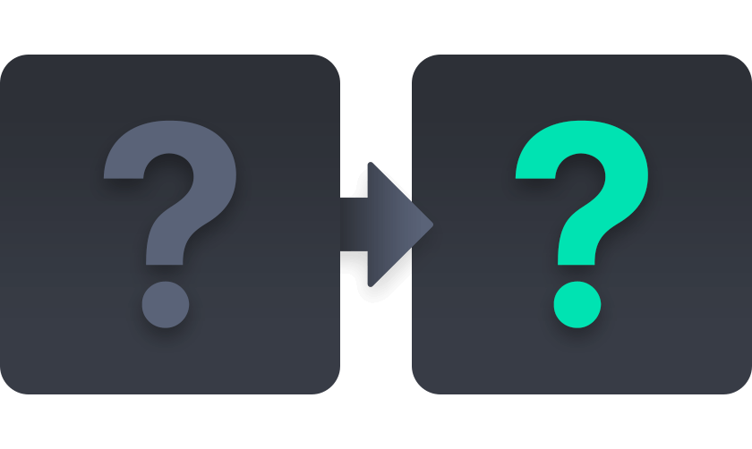

AI 음성 캐스팅 솔루션
내 콘텐츠를 위한 AI 성우
인터넷, 마이크만 있다면 언제 어디서나 다양한 AI 성우의 음성을 내 입맛에 맞게 사용할 수 있어요.
스티치 스튜디오 사용방법
내 목소리가 성우 음성으로
웹 안에서 희망 AI 성우의 음성을 선택하고, 내 목소리를 집어 넣으면 모든 것이 끝납니다!
-
1
AI 성우 캐스팅
음성 선택
내 콘텐츠에 어울릴 AI 음성을 선택하세요. 베타 기간 동안 스티치 스튜디오 팀은 새로운 AI 성우들을 주기적으로 추가해 나갑니다.
-
2
내 연출 지시
내 음성 입력
직접 성우가 따라 말할 수 있도록 사전에 녹음된 음성 파일을 업로드하거나, 직접 웹에서 녹음을 수행할 수 있습니다.
-
3
AI 성우의 연기
음성 전환
내 음성이 업로드 되면 AI 성우 음성으로 전환이 시작됩니다. 결과물은 똑같은 음성 파일로 콘텐츠에 바로 적용할 수 있는 형식으로 다운로드할 수 있습니다.
스티치 스튜디오의 음성 전환 기술
그 어떤 감정, 소리 표현도 똑같이
녹음된 내 음성의 모든 표현과 감정을 AI 성우가 똑같이 따라할 수 있습니다.
- 뉴스
- 애니메이션
- SNS 광고
- E-러닝
스티치 스튜디오의 로드맵
우리 집이 녹음실이 되는 순간까지
미디어·콘텐츠 작업에 누구나 프로덕션 수준의 음성 작업이 가능해지도록, 다양한 음성 연출 방식의 AI 기능들을 추가해 나갑니다.
스티치 스튜디오 음성 AI 기능 현황
-
사용자 음성 AI 성우 음성
음성 전환
SVC
서비스 중
-
텍스트 입력 AI 성우 음성
음성 생성
TTS
개발 중
-

??? ???
다음 모듈?
스티치 스튜디오의 미래
디지털 휴먼을 섭외하고 콘텐츠 연출을 직접 감독할 수 있는 시대
Easily create and cast characters for your content using artificial intelligence technology. You no longer need filming equipment and booking a recording studio.
스티치 스튜디오만의 AI 디지털 전환 기술을 통해, 이제는 개인 크리에이터도 다양한 모델, 성우와 함께 녹음실, 촬영장을 사용할 수 있게 됩니다.